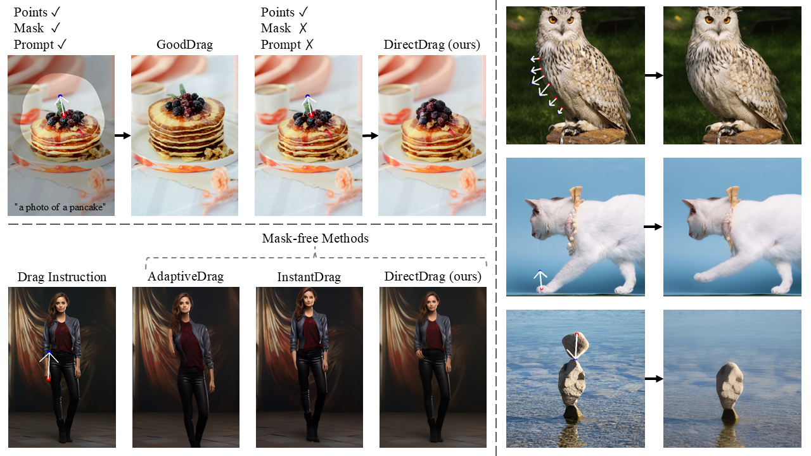
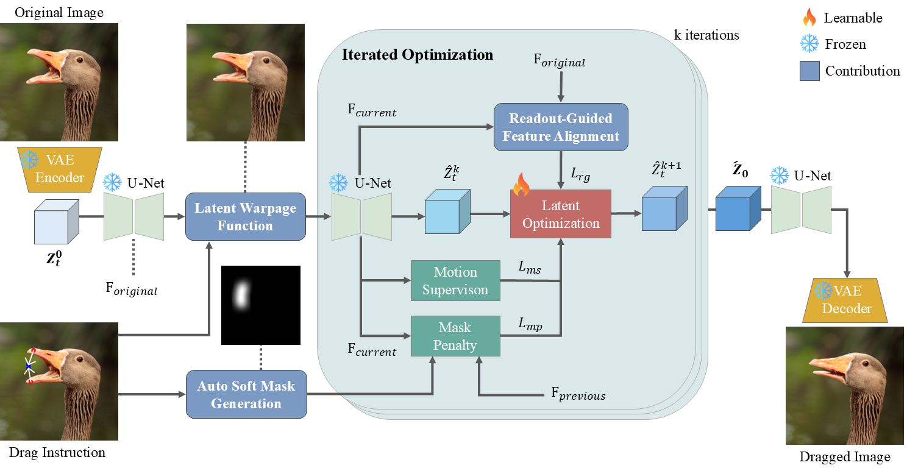
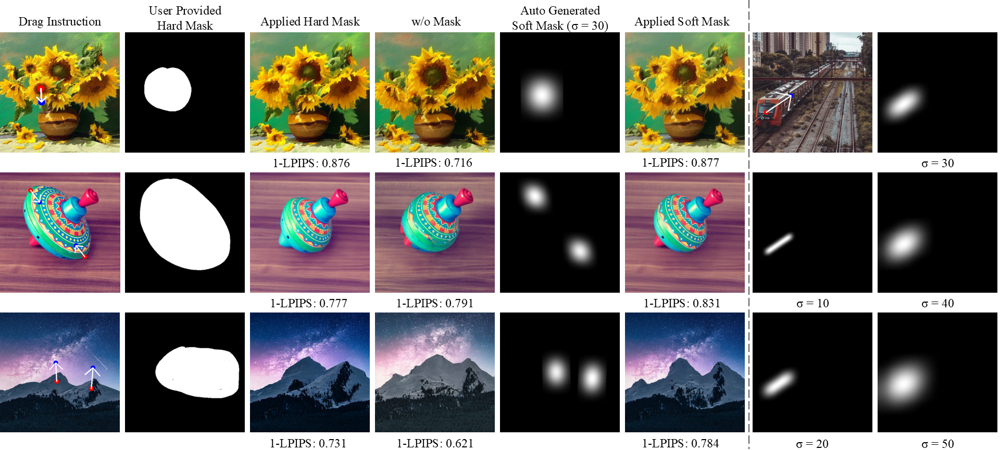
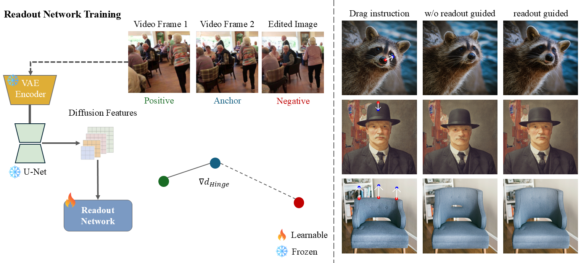
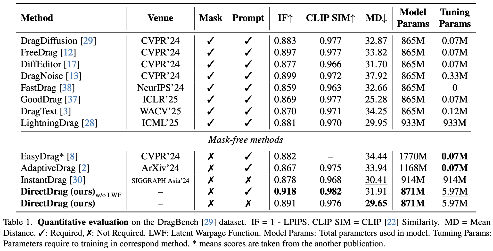
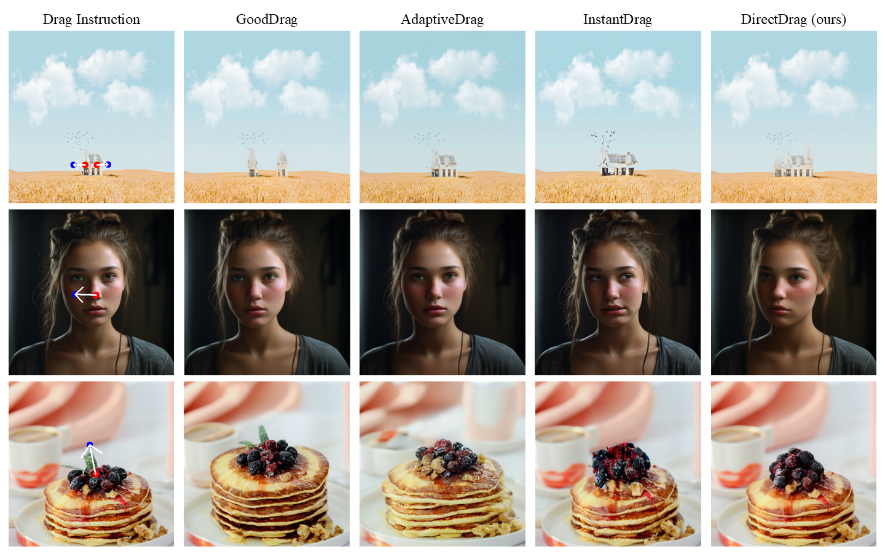
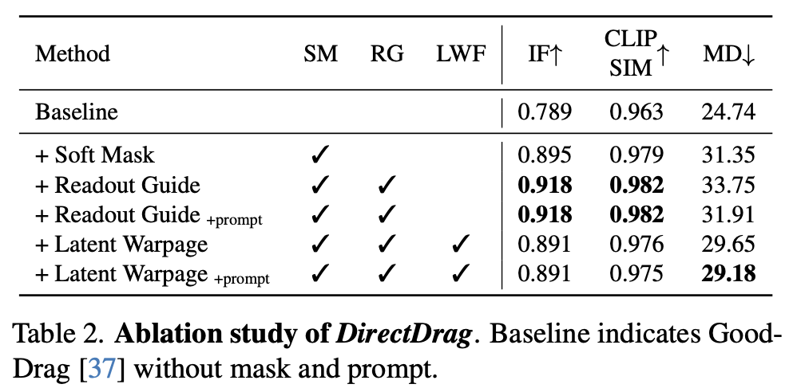

Drag-based image editing using generative models provides intuitive control over image structures. However, existing methods rely heavily on manually provided masks and textual prompts to preserve semantic fidelity and motion precision. Removing these constraints creates a fundamental trade-off: visual artifacts without masks and poor spatial control without prompts. To address these limitations, we propose DirectDrag, a novel mask-free and prompt-free editing framework. DirectDrag enables precise and efficient manipu- lation with minimal user input while maintaining high image fidelity and accurate point alignment. DirectDrag introduces two key innovations. First, we design an Auto Soft Mask Generation module that intelligently infers editable regions from point displacement, automatically localizing defor- mation along movement paths while preserving contextual integrity through the generative model’s inherent capacity. Second, we develop a Readout-Guided Feature Alignment mechanism that leverages intermediate diffusion activations to maintain structural consistency during point-based edits, substantially improving visual fidelity. Despite operating without manual mask or prompt, DirectDrag achieves supe- rior image quality compared to existing methods while main- taining competitive drag accuracy. Extensive experiments on DragBench and real-world scenarios demonstrate the effectiveness and practicality of DirectDrag for high-quality, interactive image manipulation.
Given an input image and point pairs, we apply DDIM inversion to obtain latent codes, initialize editing via latent warpage function and generate soft mask, then iteratively apply drag and denoising guided by motion supervision and feature alignment.

Left: Compared to no masking and user provide hard mask, applying the generated soft mask significantly improves visual fidelity and structure preservation, as reflected by higher image fidelity scores (1-LPIPS↑). Right: Visualization of soft masks under different drag configurations and Gaussian widths(σ), illustrating their adaptiveness to motion magnitude and direction.

Left: We train the readout network using a triplet loss on diffusion features extracted from video frames (anchor, positive) and edited images (negative). Right: Incorporating readout guidance preserves appearance details and improves structural consistency during dragging.


Qualitative comparison. Compared to the baseline(GoodDrag) and mask-free methods(AdaptiveDrag, InstantDrag), our method DirectDrag


Comming Soon